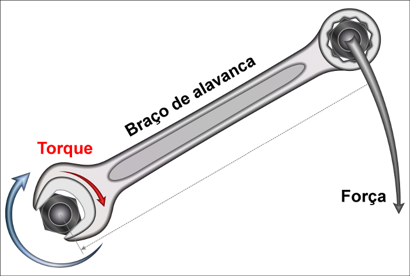

O que é torque ?
O torque é uma grandeza vetorial e, por isto, possui módulo, direção e sentido. A direção é a do eixo de rotação, o sentido é dado pela regra da mão direita, isto é, com os dedos curvados da mão direita giramos de r para F ao longo do menor ângulo entre r e F.

O polegar estendido apontará o sentido do momento da força M (torque).
A unidade de medida do torque, de acordo com o SI, é o newton-metro $(N * M)$. Além disso, o torque é uma grandeza vetorial, calculada pelo produto vetorial (ou produto externo) entre o braço de alavanca (r)(também chamada de linha de ação) e a força (F). O torque e o módulo do torque podem ser calculados por meio da seguinte expressão: $$\vec{\tau} = \vec{r} * \vec{F} \longrightarrow \|\tau \| = r*F*\sin\theta $$
É necessário que se observe um importante detalhe a respeito do cálculo do torque: seu sinal. Quando um torque produz uma rotação no sentido anti-horário, seu sinal é positivo, quando a rotação produzida acontece no sentido horário, ele é negativo. Além disso, é necessário ressaltar que o vetor torque é sempre perpendicular ao plano formado pelos vetores r e F.
O torque desempenha, para os movimentos de rotação, um papel similar àquele desempenhado pelas forças que são capazes de alterar o estado dos movimentos de translação. Quando se aplica uma força resultante não nula sobre um corpo, esse corpo desenvolve uma aceleração, no caso do torque, por sua vez, sua aplicação resulta no surgimento de uma aceleração angular. Em resumo, dizemos que o torque é o agente dinâmico da rotação.
De acordo com a segunda lei de Newton, a força resultante sobre um corpo é igual à sua massa multiplicada pela aceleração obtida pelo corpo. De maneira similar, a segunda lei de Newton para rotações afirma que o torque resultante sobre um corpo é igual ao produto do momento de inércia pela aceleração angular obtida pelo corpo. $$F = ma \hspace{3cm} \tau_{r} = l\alpha$$
As fórmulas mostradas indicam que, na rotação, a aceleração angular obtida é inversamente proporcional ao momento de inércia do corpo. De maneira similar, a aceleração obtida por um corpo em razão da aplicação de uma força é inversamente proporcional à sua inércia.
O momento de inércia é a resistência dos corpos em alterar o seu estado de rotação. Diferentemente da inércia, o momento de inércia depende de fatores, como a distribuição de massa e o formato de um corpo, além da posição de seu eixo de rotação.
Torque e momento angular
A definição clássica da segunda lei de Newton diz que a força resultante sobre um corpo é igual à variação de sua quantidade de movimento, durante certo intervalo de tempo. A mesma definição aplica-se ao torque, nesse caso, a segunda lei de Newton para a rotação — dizemos que o torque resultante é igual à variação da quantidade de momento angular durante certo tempo. Confira a similaridade destas equações: $$F_{R} = \frac{Q_{F} - Q_{I}}{\Delta t} \hspace{2cm} \tau_{r} = \frac{L_{F} - L_{I}}{\Delta t} \\ \rightarrow Q = m.v \hspace{3cm} \rightarrow L = r.m.v.\sin\theta $$
Torque resultante
uando aplicada a corpos sujeitos a movimentos de rotação, a segunda lei de Newton afirma que o torque resultante sobre um corpo é igual ao produto de seu momento de inércia por sua aceleração, além disso, em todos os casos, é possível calcular o torque pela fórmula $\tau = rF\sin\theta$, em que $\theta$ é o ângulo entre o braço de alavanca (r) e a força aplicada (F).
O torque resultante é determinado pela soma vetorial de todos os torques que atuam sobre um corpo, ademais, no caso em que a soma dos torques é nula, esse corpo tenderá a permanecer em equilíbrio rotacional: parado ou em movimento circular uniforme, ou seja, girando com velocidade constante.